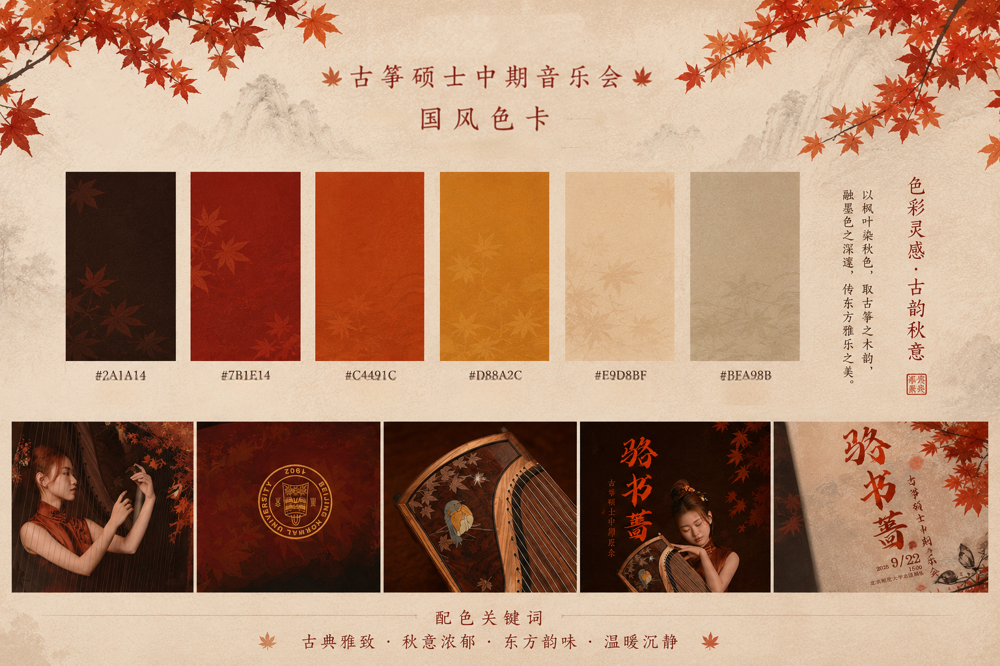
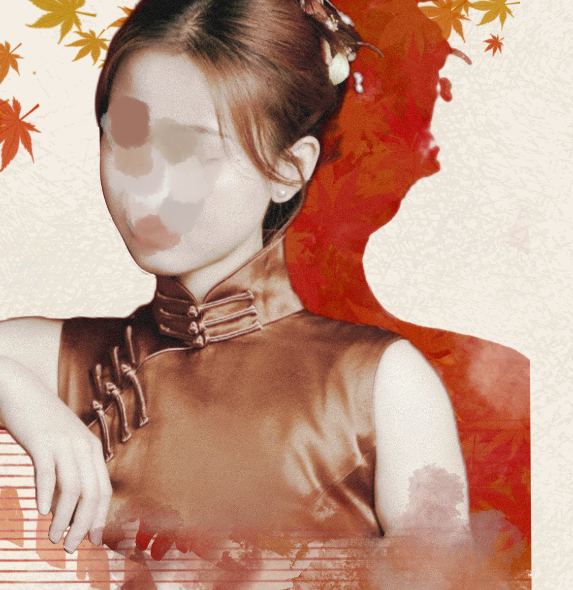
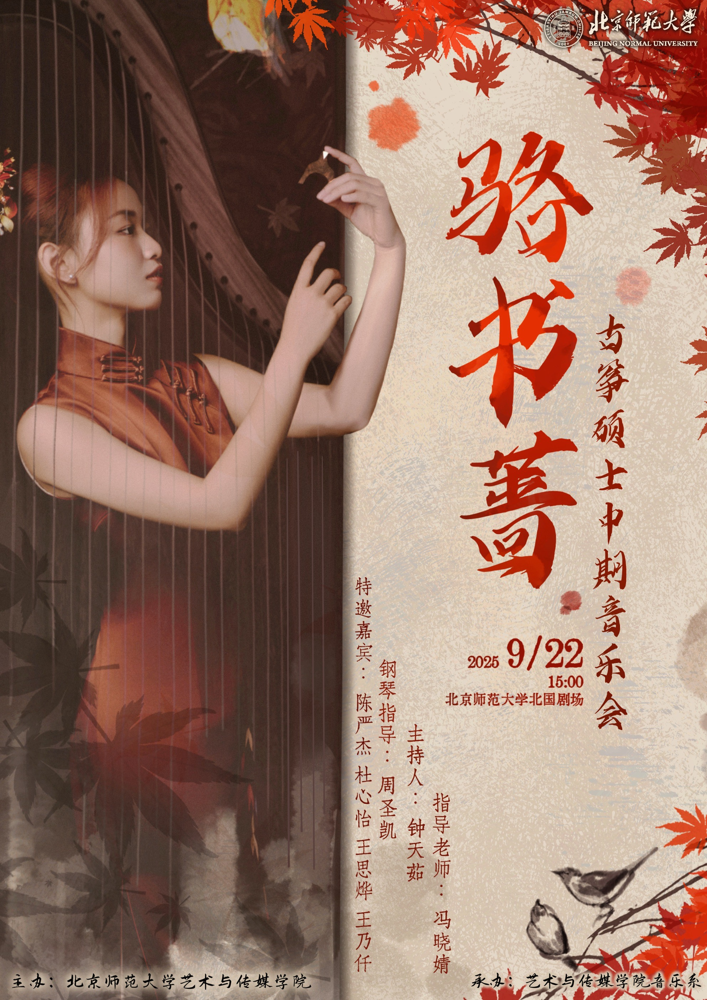
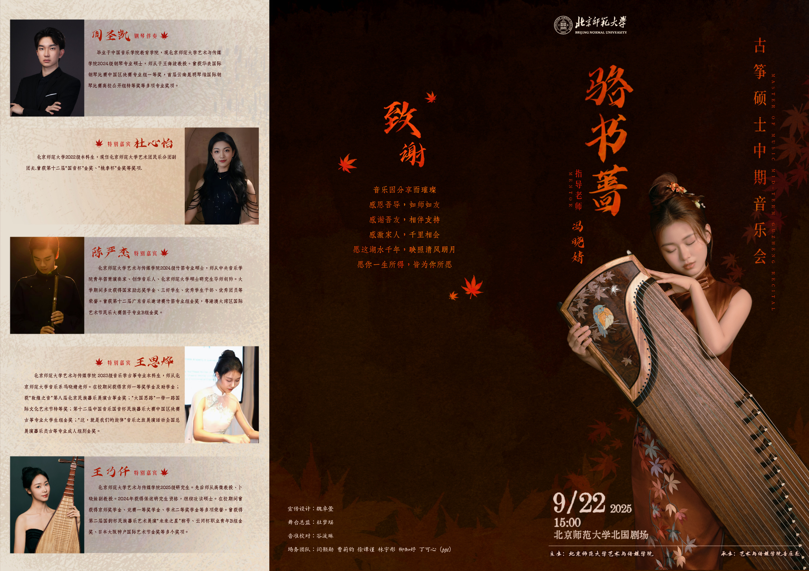
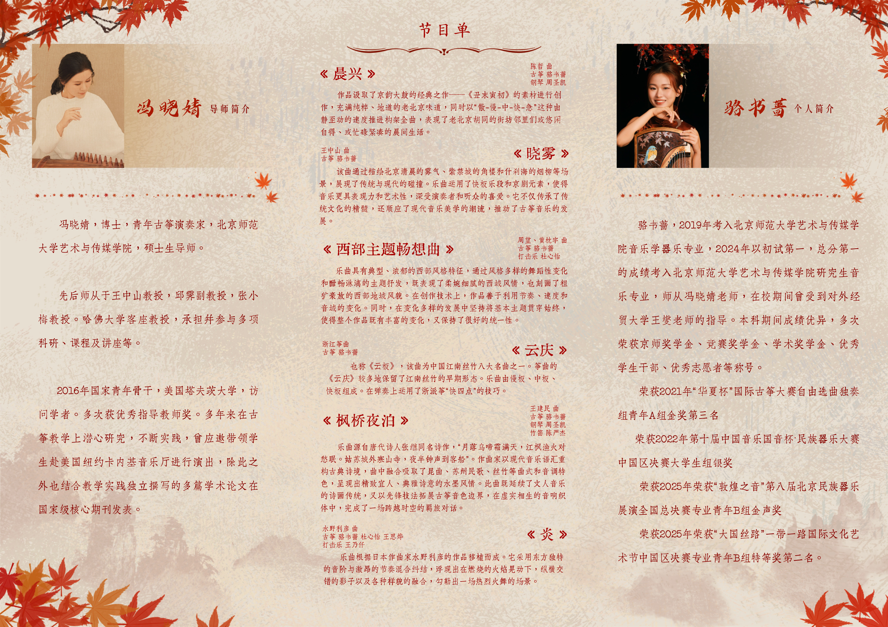

From Posters to Programs: A Visual Narrative for a Guzheng Recital
TA master's student in guzheng performance approached me to design the visual identity for her recital. Spanning five different touchpoints, the project explored how a single visual language could connect posters, programs, tickets, and event materials into one coherent experience—balancing contemporary design with the timeless elegance of traditional Chinese music.
The project spanned five pieces, including a poster, invitation, and folded program. Despite their different formats and functions, each piece was designed to feel like part of a cohesive visual system.
Maple, ink, and the warmth of strings
The visual system was built around autumn maple leaves, paired with a vermilion-red palette and ink-wash textures. The falling leaves introduce rhythm and movement, while the warm red tones reinforce the recital's sense of ceremony. Together, these elements create a cohesive identity that reflects both the season and the character of the performance.
"Every piece was designed to feel like it came from the same autumn — sharing the same red palette, the same drifting maple leaves, and the same quiet sense of warmth."
— Design intentCalligraphic titles and vertical typography became key elements throughout the system, bringing a distinct sense of Chinese aesthetics while naturally complementing the character of the guzheng. At the same time, they helped balance cultural expression with clarity across different formats.
Palette, type, and motif — three elements, one language



Five pieces, one autumn





Like the warmth in this work?
This was one of several client print projects. Reach out to see more visual & illustration work, or to talk about a commission.
Get in touch ↗ ← Back to portfolio